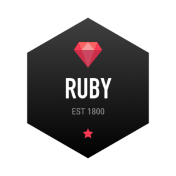

A persona template that gives us a better idea of what audience wants, expects, and fears, which allows us to target the particular audience in a beneficial way.
In order for your website or logo to be successful, we must first know what audience is going to be subject to your product. Websites take this survey in greater detail due to its abudance of possible content, while logos don't concentrate much into these surveys.
We first hold surveys by targetting people that have exposed themselves to your bussiness' services. We learn what they generally use your services for, what are their goals and expectations when they receive these services, and what is their fear when interacting with your bussiness or services. We also learn what type of audience (men, women, children, parents, etc.) uses your services so we can concentrate the content and look into them. The logo is easier to research, because we aim to make the logo look friendly to the generally exposed to the bussiness people, while also giving a clear picture of the offered services to people that have never interacted with the bussiness' services.
After we are completely aware of what is our audience and what are their expectations, goals, and fears, we proceed to make sketches of the product. The website sketch is also known as a "wireframe". These sketches are a rough idea of what the product is going to look like; it does not feature real text and shows how the page will be structured and where potential images will be placed.
In graphic design, you will get rough idea of what the logo will feature. No matter which type of sketch do you get, we proceed to the next phase once you approve of the given design.
A wireframe used to develop a rough idea of the website. The text is not real and the big boxes with X on them are placements of pictures.
The protoype shows a better vision on how the product will look like. This one now features real text, while rectangles represent approved images, although not picked yet.
Protoypes are more complete, but still not fully completed drafts on the product's final outlook. They generally now feature real text and the boxes with X are replaced with rectangles, implying their approved status.
In graphic web, additional details are added to the sketch. As they say, the smallest detail can make or break the logo.
Mockup is the final phase of preparing your product's intended design. The image placeholders are now filled with real images (which are approved by you), the text is largely up to date with your wishes. Once everything is approved, we will start creating the real product.
In the graphic aspect, the logo will be fully completed, with every single detail added to the product. Once everything is cleared up, the logo will be ready for use.

A finalized logo, ready to advertise its bussiness.
The mockup is the finalized version of how the website is going to look. The website now has an arsenal of pictures and the text content is 95% at least approved.
Once we are done with this, your work will be ready to attract new customers for your bussiness. They will easily navigate through your website or get a clear idea of what your business offers and its quality simply through the logo. On the other hand, we will also be grateful that you chose and worked with us and that we could contribute to your major success.